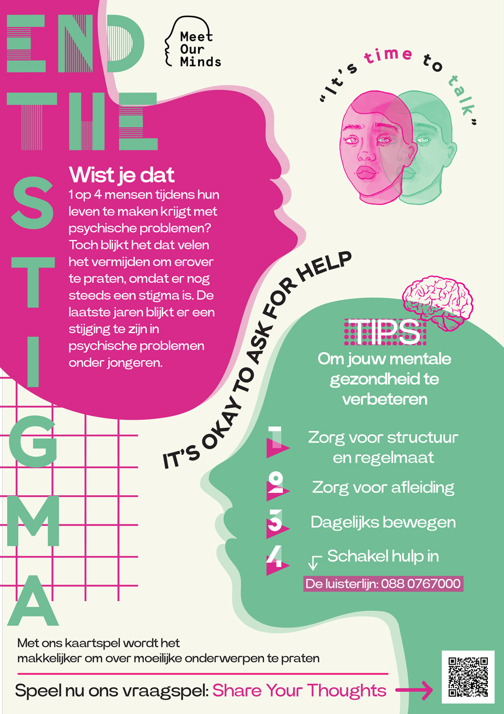
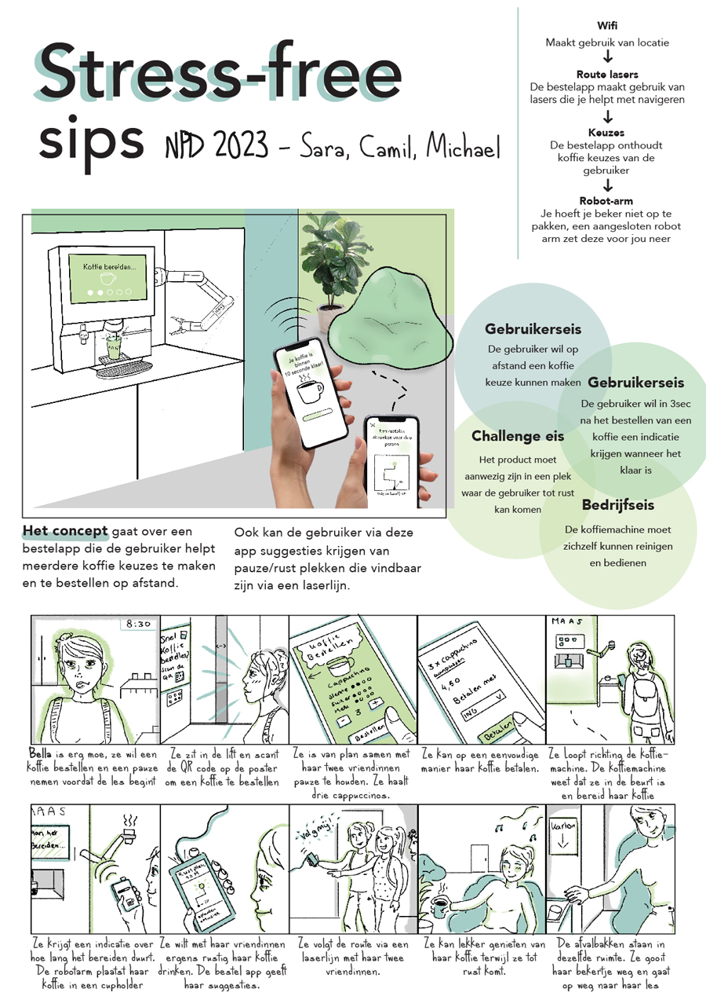
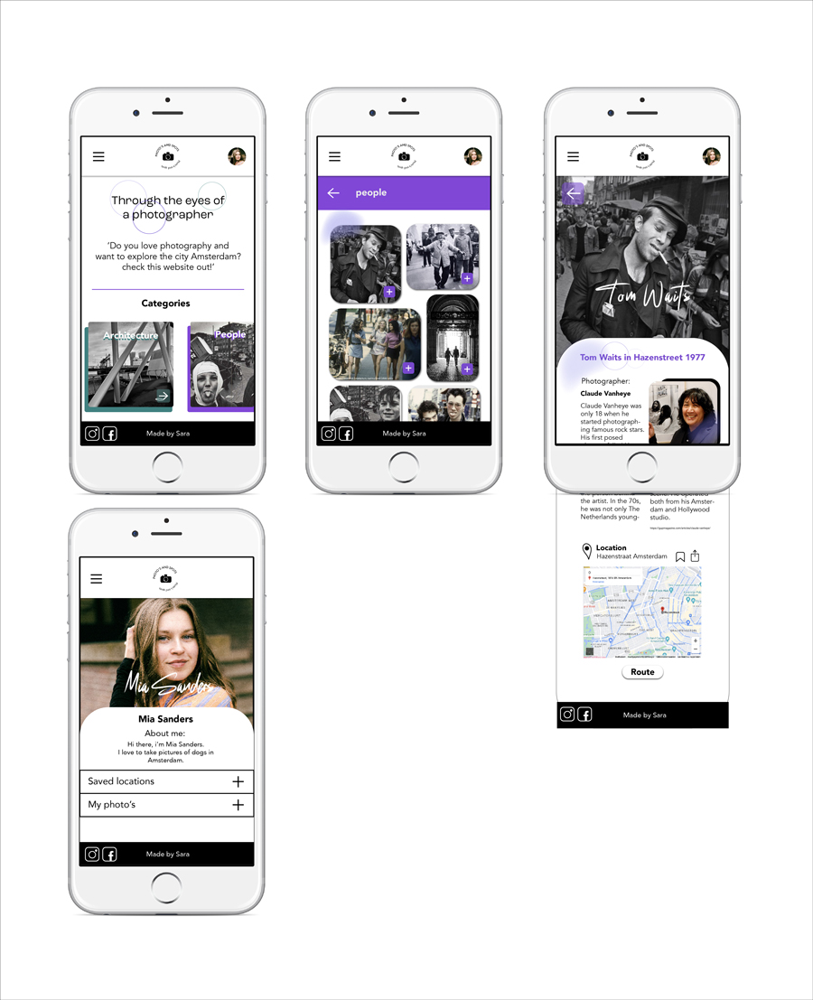

Moodboard Ramen shop
Tijdens het vak 'vormgeving' moest ik een overlaying & printing website ontwerp maken voor een voedsel/drink shop.
Als eerste stap heb ik onderzoek gedaan naar overlaying & printing en inspiratie opgedaan voor mijn website. Daarbij heb ik een
moodboard gemaakt die de look and feel van mijn website zou moeten overbrengen.

Moodboard passie project
Tijdens het passieproject (team project) ben ik gaan samenwerken met twee andere studenten. Voor dit project
was het de bedoeling dat je een ontwerp en product maakt waarin je jouw passies verwerkt en dat ook bijdraagt aan een betere
wereld. Ik en de twee andere studenten zijn begonnen met inspiratie opdoen. Ik heb deze moodboard gemaakt als inspiratie voor een
informatieve poster en bijpassend kaartspel.

Ramen shop 3 designs
Voor het vak 'vormgeving' heb ik uiteindelijk 3 verschillende website versies gemaakt.
Ik heb gespeeld met de layout en het positioneren van elementen.

Logo's Sara's ramen website
Ik heb vanuit een aantal logo schetsen, een paar logo's uitgewerkt in Adobe Illustrator die ik het beste vond.
Dit zijn logo's die ik bedacht heb voor de ramen website voor het vak 'vormgeving'.

Iconen voor sara's ramen website
Ik ben begonnen met het maken van verschillende schetsen van iconen. Ik heb vervolgens een aantal van deze schetsen
uitgewerkt in Adobe Illustrator. Ik heb een aantal van deze iconen gebruikt voor Sara's ramen website ontwerp.

Mental health poster
Voor het passieproject was deze informatieve poster een van onze eindproducten. Ik en de twee andere studenten hadden bedacht om een informatieve poster te ontwerpen dat bedoeld was voor
studenten die worstelen met mentale problemen. Bij deze poster hebben we ook een kaartspel bedacht dat als doel heeft studenten over hun problemen te laten praten met anderen. Tot slot hebben wij deze poster laten
uitprinten bij een riso printer om een overlaying/3D effect te creëren.

Productposter New Product Development
Voor het vak 'new product development', moest ik een innovatief concept bedenken dat een oplossing biedt voor een probleem waar de doelgroep tegenaan loopt.
Ik moest hiervoor verschillende brainstorm methoden uitvoeren en idee schetsen maken. Als eindproduct heb ik een productposter gemaakt met het concept, storyboard, eisen en functies van het concept.

Hi-fi mobiele website schermen
Voor een individueel project moest ik een mobiele website bouwen en ontwerpen met in het hoofd een student uit Australië.
Deze student wil in een korte tijd meer kunnen zien en doen in Amsterdam. Ik had als idee om een website te bouwen dat fotografie werk laat
zien van Nederlandse fotografen. Door deze foto's kan de student via een creatieve manier plekken in Amsterdam vinden en bezoeken.

Illustratie poster
Tijdens het passieproject heb ik ook illustraties gemaakt voor de informatieve poster die ik op deze pagina ook heb laten zien. Ik heb een illustratie gemaakt
van een hoofd van een vrouw die serieus kijkt. Ik heb twee soorten kleuren gebruikt en de twee hoofden over elkaar heen geplaatst. Ik vind het altijd heel leuk om
illustraties toe te voegen aan mijn projecten, ik kan dan mijn eigen stijl erin kwijt.